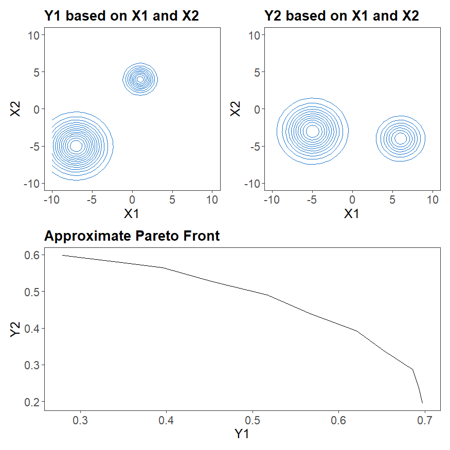
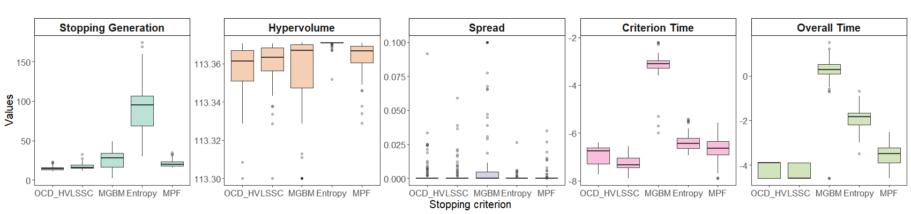
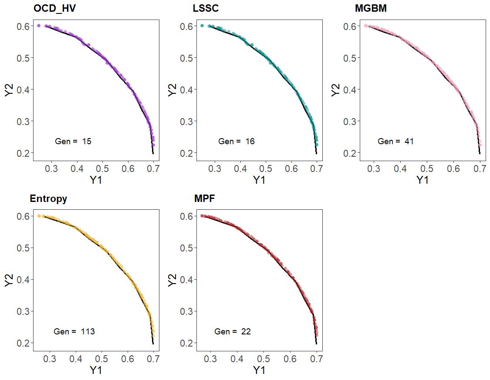
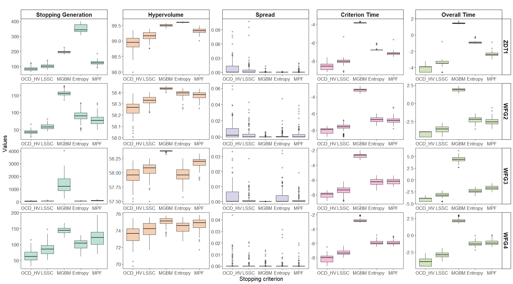
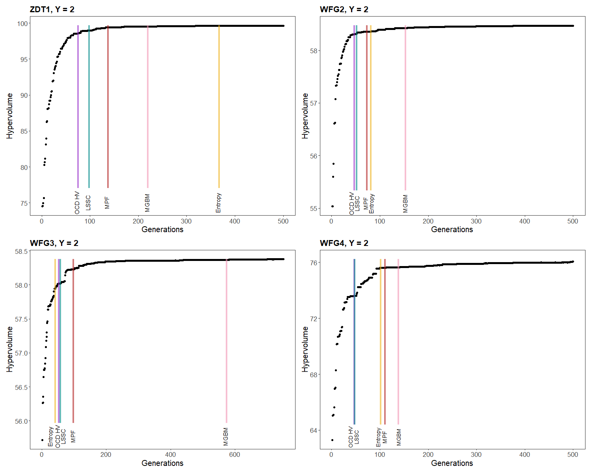
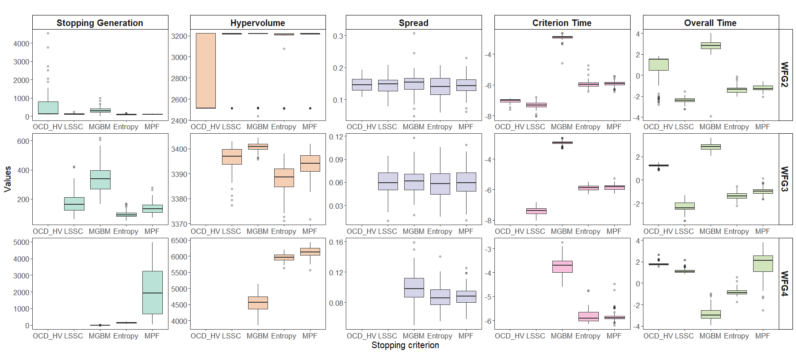
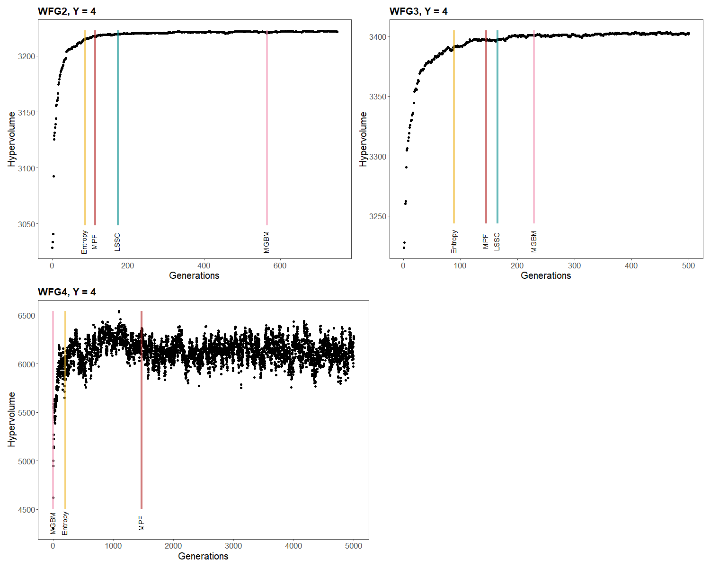
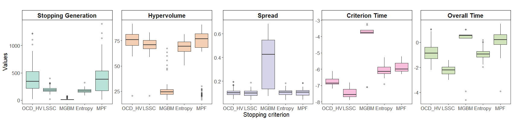
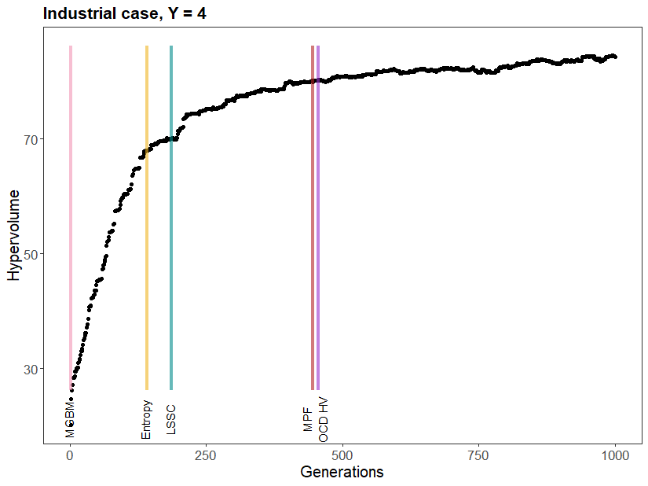
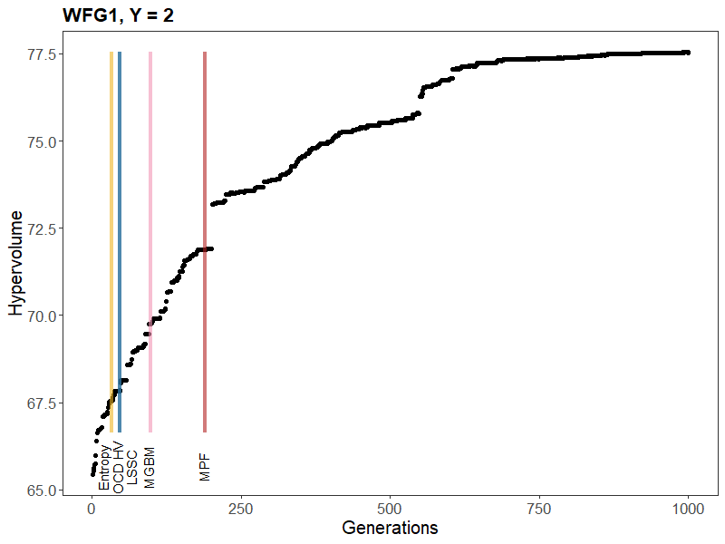

![]()
| Criterion | Mean | Std | Mean | Std | Mean | Std | Mean | Std | Mean | Std |
|---|---|---|---|---|---|---|---|---|---|---|
| OCD_HV | 113.358 | 0.011 | 0.004 | 0.011 | 15 | 2 | 0.003 | 0.007 | 0.000 | 0.000 |
| LSSC | 113.361 | 0.009 | 0.003 | 0.009 | 17 | 4 | 0.005 | 0.007 | 0.000 | 0.000 |
| MGBM | 113.364 | 0.012 | 0.006 | 0.016 | 24 | 14 | 1.161 | 0.869 | 0.038 | 0.025 |
| Entropy | 113.371 | 0.002 | 0.001 | 0.003 | 93 | 30 | 0.163 | 0.078 | 0.002 | 0.001 |
| MPF | 113.363 | 0.008 | 0.002 | 0.005 | 21 | 4 | 0.030 | 0.018 | 0.001 | 0.001 |
1 Introduction
Industrial performance is a key issue for companies, particularly in the food sector because the sector is highly challenging and turnover is usually very low. It reflects the ability of a production system to achieve its objectives in terms of quality, and cost, as well as sustainability and environmental impact (Madoumier et al. 2019). Far from being a one-dimensional concept, industrial performance is a multifaceted notion, assessed through a variety of indicators that are often interdependent and sometimes even contradictory. Optimizing performance therefore means finding a balance between multiple objectives, which adds complexity to the decision-making process (Drofenik et al. 2023).
To address this challenge, multi-objective optimization methods provide a rigorous framework for identifying trade-offs between different performance objectives Wari and Zhu (2016). These methods aim to find a set of solutions that meet the defined objectives, known as the Pareto Front. Evolutionary algorithms are commonly used to generate the Pareto Front. This family of algorithms is inspired by evolutionary theories, with notable examples including NSGA-II (Non-dominated Sorting Genetic Algorithm II) and SPEA-2 (Strength Pareto Evolutionary Algorithm 2) (Konak, Coit, and Smith 2006).
For most algorithms, the stopping criterion corresponds to the maximum number of generations to be performed, which is set a priori by the user. This predefined number of generations does not guarantee the quality of the solutions, if it is too low or may lead to unnecessary computational resource consumption if it is too high. For the latter, the algorithm keep on processing even when improvements are minimal or nonexistent (Roudenko and Schoenauer 2004). An effective stopping criterion is therefore to find the minimal number of generations beyond in which the algorithm is not able to improve the quality of the solutions anymore. To measure the quality of the Pareto front, two main categories of metrics are usually distinguished: diversity metrics and convergence metrics (Li and Yao 2020). Diversity metrics assess how well the solutions are distributed along the Pareto front, ensuring adequate coverage of the objective space. Their goal is to avoid clustering in specific regions and to promote a large and uniform exploration of the objective space. Examples of metrics include spacing measures and entropy-based metrics. Convergence metrics, on the other hand, evaluate how close the current solutions are to the theoretical Pareto front or a reference point in the objective space. Common metrics in this category include hypervolume and generational distance (Liu, Zhou, and Zhang 2018). Hypervolume measures the space covered by solutions in the objective space and generational distance measures the distance of the front from a reference front (Audet et al. 2021). To guarantee the quality of the solutions when the algorithm stops, a stopping criterion based on the evaluation metrics of the solutions is required. In this regard, several stopping criteria based on the quality of the solutions have been proposed in the literature.
A typical stopping criterion contains two main components: a evaluation metric and a termination criterion. Evaluation metric evaluates the evolution of the solutions, while the termination criterion determines whether the algorithm should stop depending on the evaluation metric (Liu, Zhou, and Zhang 2018). For comparative purposes, four criteria frequently used in the literature were selected. These criteria are defined based on various evaluation metrics and termination criteria. The MGBM criterion belongs to the class of convergence based metric with the Mutual Dominance Rate (MDR) coupled with a Kalman filter (Martí et al. 2016). The OCD HV (Online Convergence Detection based on Hypervolume) criterion relies on a Chi-squared and the hypervolume convergence metric to evaluate the algorithm’s progress (Wagner, Trautmann, and Naujoks 2009). The advantage of this criterion is its reduced computational complexity, although according to the literature, it tends to stop too early (Wagner, Trautmann, and Naujoks 2009). The LSSC (Least Square Stopping Criterion) is based on the analysis of residuals from a linear regression applied to the evolution of a evaluation metric over a window of generations. In this paper, the chosen metric is hypervolume. This criterion aims to be easy to implement (Guerrero et al. 2010). Finally, the entropy-based criterion (Population-based entropy) calculates a dissimilarity measure based on entropy between solution populations across generations (Saxena et al. 2016).
Stopping criteria have already been compared on standard multi-objective problems commonly found in the literature Martí et al. (2016). These comparative studies highlight that there is no single optimal stopping criterion suitable for all algorithms and problem types. OCD criterion has been shown to stop earlier than others, while MGBM can suffer from significant computational cost. The effectiveness of a given criterion can be influenced by the specific characteristics of the problem being addressed (Abu Doush et al. 2023). Moreover, some criteria may become computationally expensive as the number of objectives increases. This is the case with the hypervolume metric (Liefooghe and Derbel 2016). Additionally, the literature demonstrates that the quality of a Pareto front cannot be adequately assessed by a single evaluation metric Halim, Ismail, and Das (2021). Therefore, it is crucial to develop more robust and adaptive stopping criteria, for example by combining multiple evaluation metrics of the Pareto front.
In this paper, we introduce a new stopping criterion, called MPF for Maximum Performance Front. MPF aims to leverage two evaluation metrics, and will be evaluated against existing criteria. Although benchmark problems are designed to match real-world applications, their formulations remain far from industrial challenges, where objective functions are often unknown and highly complex. In an industrial context, a stopping criterion is essential to be able to use the multiobjective optimization method more efficiently. Presently, stopping criteria have never been compared on industrial applications and deserve to be evaluated in such contexts (Abu Doush et al. 2023).
The paper is organized as follows: Section 2. presents the existing criteria and introduces MPF criterion. Section 3. describes the methodology used to compare stopping criteria and the different multi-objective problems used. Section 4. presents the results obtained for each approach, followed by a final section where the results are compared and discussed.
2 Stopping criteria for multi-objective optimization
2.1 Formulation of evaluation metrics for existing stopping criteria
In this section we recall the definition of the 4 main stopping criteria introduced in the litterature: OCD HV, LSSC, MGBM and Entropy. Three of them are based on an convergence metric. OCD HV and LSSC criteria are based on hypervolume (Guerreiro, Fonseca, and Paquete 2022): \begin{equation} HV(Y_N; \mathbf{r}) = \lambda_m \left( \bigcup_{\mathbf{y} \in Y_N} [\mathbf{y}, \mathbf{r}] \right) \end{equation} where:
- Y_N: Pareto front approximation.
- m : number of objectives
- \mathbf{r} \in \mathbb{R}^m: reference point, such that for all \mathbf{y} \in Y_N, \mathbf{y} \leq \mathbf{r}
- \lambda_m: m-dimensional Lebesgue measure
The OCD HV criterion seeks to determine if the improvement in hypervolume is statistically significant over a window of generations with a Chi-squared test (p-value < 0.05). The LSSC criterion is based on the slope and dispersion of the residuals from a linear regression. It requires the size of the window to be fixed as well as a threshold on the slope. In this article, the threshold is set at 10e-2 according to the literature.
MGBM criterion is based on the MDR metric which measures the number of non-dominated solutions from the previous iteration that are dominated by non-dominated points in the current iteration. \begin{equation} MDR(Y_N; n) = \frac{|\Delta(Y_N(n{-}1), Y_N(n))|}{|Y_N(n{-}1)|} - \frac{|\Delta(Y_N(n), Y_N(n{-}1))|}{|Y_N(n)|} \end{equation}
where:
- Y_N(n): Pareto front approximation at generation n
- \Delta(A, B): Set of elements in A that are dominated by at least one element of B
- |\cdot|: Cardinality (number of elements in the set)
The values of the MDR metric can be between -1 and 1 where MDR = 1 corresponds to generation n completely dominates generation n-1, MDR = -1, generation n is completely dominated by n-1 generation and MDR = 0 means that there is no progress between generation n and n-1 (Audet et al. 2021). The stopping criterion is configured to terminate the iteration when the MDR drops below a fixed threshold (here, 0.05), signaling convergence (Abu Doush et al. 2023).
Finally, Entropy, which evaluates the distribution of solutions along the Pareto front, is based on a measure of diversity (Audet et al. 2021).
\begin{equation} S(p||q) = KL(p||q) = - \sum_{i=1}^{T} p(x_i) log{\frac{q(x_i)}{p(x_i)}} \end{equation}
where:
- KL : relative entropy for comparing two different distribution (also known as Kullback-Leibler divergence)
- p(x_i) : probability distribution of Pareto front P
- q(x_i) : probability distribution of Pareto front Q
When this measure approaches zero or stagnates, the difference between two distributions has stabilized and the iteration stop. The measure relies on rounded means over a window of generations, with the rounding precision being user-defined. According to the literature, this is typically set to two decimal places (Saxena et al. 2016). For all the criteria requiring a sliding window of generations to assess the stopping condition, the size of this window was set to 10 generations.
2.2 Définition of MPF criterion
MPF is based on two evaluation metrics: hypervolume and a diversity measure, entropy. These two metrics allow us to assess both how well the Pareto front explores the objective space and how well the solutions are spaced. The proposed stopping criterion is described in Algorithm 1.
Algorithm 1: Stopping criterion using sliding windows on hypervolume and entropy
Input: L: window length, \varepsilon: convergence threshold, dec: number of decimal places
- Initialize generation counter n \leftarrow 0
- Initialize hypervolume history H \leftarrow [\,], entropy history S \leftarrow [\,]
- while true do
- \quad Run NSGA-II for generation n to obtain non-dominated set Y_n
- \quad Compute hypervolume HV_n \leftarrow HV(Y_n)
- \quad Compute diversity Ent_n \leftarrow Entropy(Y_n,Y_{n-1})
- \quad Append HV_n to H, and Ent_n to S
- \quad if n \geq L+1 then
- \quad\quad Define previous window:
- \quad\quad\quad H_{\text{old}} \leftarrow H[n-L : n-1]
- \quad\quad\quad S_{\text{old}} \leftarrow S[n-L : n-1]
- \quad\quad Define current window:
- \quad\quad\quad H_{\text{new}} \leftarrow H[n-L+1:n]
- \quad\quad\quad S_{\text{new}} \leftarrow S[n-L+1:n]
- \quad\quad Compute mean values for both windows:
- \quad\quad\quad \overline{H}_{\text{old}} \leftarrow \frac{1}{L} \sum_{i=1}^{L} H_{\text{old}}[i]
- \quad\quad\quad \overline{S}_{\text{old}} \leftarrow \frac{1}{L} \sum_{i=1}^{L} S_{\text{old}}[i]
- \quad\quad\quad \overline{H}_{\text{new}} \leftarrow \frac{1}{L} \sum_{i=1}^{L} H_{\text{new}}[i]
- \quad\quad\quad \overline{S}_{\text{new}} \leftarrow \frac{1}{L} \sum_{i=1}^{L} S_{\text{new}}[i]
- \quad\quad Compute relative variations:
- \quad\quad\quad \Delta H \leftarrow \frac{|\overline{H}_{\text{new}} - \overline{H}_{\text{old}}|}{\overline{H}_{\text{old}}}
- \quad\quad if \Delta H \leq \varepsilon and Round(\overline{S}_{\text{old}}, dec) = Round(\overline{S}_{\text{new}}, dec) then
- \quad\quad\quad break
- \quad\quad end if
- \quad end if
- \quad n \leftarrow n + 1
- end while
- return non-dominated set F_n and generation n
The objective of this criterion is to strike a balance between computation time and the quality of the Pareto front by considering multiple evaluation metrics of the front. Since hypervolume values are inherently dependent on the number of objectives, we computed the relative hypervolume \Delta H (Algorithm 1, line 21) to establish a universal threshold that remains comparable across problems of different dimensionalities. In this paper, the threshold \epsilon is set to 10e^{-3}, the window size at 10 generations and the number of decimal dec for entropy at 2.
3 Methodology
To compare the different stopping criteria, three complementary approaches were implemented in R. The first situation involves testing the criteria on a simulation of objective functions to generate a theoretical Pareto front, which allows to compare the fronts obtained using the stopping criteria to a simulated front. The second situation evaluates the criteria on a benchmark of well-known multi-objective problems from the literature. Finally, the third situation compares the criteria on one selected industrial case. These three comparative analysis will be detailed in the following sections.
For each of these analysis, a common methodology was followed to enable a comparison of the criteria.For each optimization run, a maximum number of 5000 generations was set. The stopping criteria are then applied and several informations are collected for each criterion :
- Number of generations at the time of termination
- Hypervolume (HV)
- Spread
- Overall computation time (s)
- Criterion computation time (s)
The hypervolume is used to assess the convergence of the front obtained for each criterion, while the Spread metric gives an indication of the diversity of the front. The overall computation time represents the complete execution duration from the first generation to the stopping generation, while the criterion computation time corresponds to the time required for one generation computation. The multi-objective evolutionary algorithm NSGA-II was used to solve multi-objective problems (K. Deb et al. 2002). To account for the inherent variability of stochastic population initialization, which can impact optimization results, we performed 100 independent runs for each problem, thus enabling a representative distribution of the results.
3.1 Simulation of a theoretical Pareto front
To generate a theoretical Pareto front, we simulate two continuous objective functions, Y_1 and Y_2, defined over a two-dimensional input space (X_1, X_2) \in [-10, 10]. Each objective function is modeled as a sum of weighted Gaussian functions, allowing precise control over the mean, standard deviations. Each objective Y_k (for k = 1,2) is computed as: \begin{equation} Y_k(X_1, X_2) = \sum_{i=1}^{n_k} h_{k,i} \cdot \exp\left(-\frac{(X_1 - \mu_{k,i}^{(1)})^2 + (X_2 - \mu_{k,i}^{(2)})^2}{2\sigma_{k,i}^2} \right) \end{equation}
where:
- n_k is the number of Gaussian components for objective Y_k,
- \mu_{k,i} = (\mu_{k,i}^{(1)}, \mu_{k,i}^{(2)}) is the mean of the i-th Gaussian for objective Y_k,
- \sigma_{k,i} is the standard deviation of the i-th Gaussian,
- h_{k,i} is the weight of the i-th Gaussian.
The domain is discretized using a regular grid of size 50 \times 50, forming a total of 2500 input points. This formulation produces smooth surfaces where the means, standard deviations and weights of the Gaussian functions influence the trade-offs between objectives. The theoretical Pareto front is obtained by evaluating all solutions in the objective space (Y_1, Y_2) and selecting only the non-dominated points (those for which no other solution improves one objective without degrading the other). However, the evaluated grid does not capture all non-dominated points but only a subset, providing an approximation of the theoretical Pareto front. The simulated objectives Y_1 and Y_2, along with the corresponding approximate Pareto Front, are shown in Figure 1.

3.2 Multi-objective problem benchmarks
To compare the selected stopping criteria, several multi-objective optimization benchmark problems were selected, covering a variety of Pareto front structures. The well-known and widely used ZDT1 problem has a convex and continuous front, making it a simple case for an initial comparison (Kalyanmoy Deb et al. 2005). The WFG2 problem introduces complexities with a non-convex and discontinuous front, as well as multimodality in the form of plateaus. A problem is multimodal if it contains several local optima (solutions not locally dominated but dominated by other solutions on the front). The WFG3 problem exhibits degeneracy due to the high correlation between objectives, providing a good case study for assessing the robustness of the criterion in relation to redundancy and dependency between objectives (which is common in real problems). Finally, WFG4, characterized by high multimodality and a concave front, is useful for testing the criterion’s ability to avoid local minima (Huband et al. 2006). The large scope of these benchmark scenarios makes it possible to compare the performance of the stopping criteria on fronts of various shapes and complexities. In addition, as the WFG problems are scalable, they were used to analyze the impact of increasing the number of objectives on the behavior of the stopping criterion, with tests carried out for 2 objectives, then 4 objectives with 20 variables for both configurations. Problem ZDT1 was used in its classic configuration, with 2 objectives and 30 variables.
3.3 Industrial application
To test the stopping criteria on an industrial application, we analysed a case study from a cheese industry. This industry collects data throughout the manufacturing process, from milk collection to cheese ripening. These data were used for a multi-objective optimization coupled with data-driven modeling (Perrignon et al. 2024).
This approach involves defining the industry’s performance objectives. Based on expert knowledge, four objectives were identified, each corresponding to a key performance indicator measured on the process. These indicators include economic performance indicators (cheese dry matter, protein content per kilogram of cheese and fat content per kilogram of cheese), as well as environmental indicators (water consumption).
Each indicator was modeled using Random Forest based on 79 process variables (Perrignon et al. 2025). These models are then used to construct the objective functions, which returns predicted values for the four indicators based on the input variables generated by the multi-objective optimization algorithm. The multi-objective problem can therefore be defined as follows:
\min \hat{f}(x)
\text{subject to } g(x) \geq \mathbf{0}
with:
\begin{align*} x &\in \mathbb{R}^n \quad &&\text{(n process variables)} \\ g &: \mathbb{R}^n \rightarrow \mathbb{R}^j \quad &&\text{(j constraints)} \\ f &: \mathbb{R}^n \rightarrow \mathbb{R}^k \quad &&\text{(k objective functions)} \end{align*} \hat{f}_k(x) is a machine learning model corresponding to indicator. The constraints of the optimization problem reflect the operational constraints of the cheese manufacturing process. These constraints apply to the process variables and may be expressed either as bounds or as equations linking some variables within the process.
4 Experimental results
4.1 Comparison with the simulated Pareto front
The stopping criteria were evaluated on optimization tasks using the simulated objective functions. Figure 2 reports the results over 100 repetitions for each criterion and Figure 3 shows the fronts obtained after the iteration is stop by the stopping criteria compared with the simulated front. Detailed numerical results are provided in the appendix Table 1.

According to Figure 2, differences between the stopping criteria are not particularly pronounced in terms of hypervolume values. All criteria appear to successfully reach the Pareto front (Figure 3). However, variations exist in terms of the number of generations before termination. The Entropy criterion tends to stop at higher generations compared to the OCD HV or LSSC criteria. Given that the objective functions (i.e. Y_1 and Y_2 as functions of X_1 and X_2) are relatively simple, the Pareto Front stabilizes after only a few generations. This stabilization is accurately detected by all criteria.

As expected, OCD HV stops before the other criteria, resulting in lower computational cost and potentially reduced performance in terms of hypervolume values. The Pareto front obtained under OCD HV is satisfactory, although some areas of the front remain unexplored (Figure 3). On the other hand, Entropy stops much later, leading to higher-quality fronts at the expense of increased computational cost. The Entropy criterion produces results similar to those of the MGBM and MPF, but requires more generations to do so. This suggests that Entropy could potentially terminate earlier while still achieving comparable Pareto front quality. The LSSC criterion obtains similar results to OCD HV with some unexplored regions. For this simple problem, characterised by a small number of objectives and variables, all the stopping criteria identify a Pareto front close to the simulated front, with no significant differences in their ability to reach the theoretical front.
4.2 Increase in complexity with problems benchmark
4.2.1 Results for two objective problems
This section focuses on the analysis of benchmark problems with two objectives. These four problems represent a range of difficulty levels and exhibit diverse Pareto front shapes. Figure 4 presents the results in terms of the number of generations when the iteration is stop by the stopping criteria, the corresponding hypervolume and spread, as well as two types of computational time. Detailed numerical results are provided in the appendix Table 2.

Overall, the stopping criteria perform well on these bi-objective problems, with outcomes aligning with those previously reported in the literature. The OCD HV criterion, known for its low computational cost (Wagner, Trautmann, and Naujoks 2009), consistently yields lower hypervolume values than the other criteria, but also stops earlier and has the lowest computation time. Across all problems, the MGBM criterion stands out as one of the most effective in achieving high hypervolume and low spread. However, this comes at the expense of a significant computational cost, even if the results obtained are significantly superior than those of other methods. The LSSC criterion performs better than OCD HV but remains less effective than the other approaches. In contrast, Entropy, which is among the top-performing criteria alongside MGBM, achieves good performance in both hypervolume and spread while maintaining a low computational cost. The MPF criterion appears to offer a good trade-off between performance and computational cost, achieving satisfactory results with relatively low computation time.
Figure 5 illustrates the evolution of the hypervolume over generations for problems benchmark for one run of optimization and the generation at which the stoping criteria stop the iteration. The stopping criteria identify the generation at which the Pareto front is considered stabilized, enabling the algorithm to terminate the iteration processus.

For the ZDT1 problem, OCD HV and LSSC, are the first to stop, whereas the Pareto front is still undergoing slight improvements. The other criteria detect a later stabilization, especially MGBM and Entropy. MPF appears to offer the best compromise between computational cost and Pareto front quality.
For WFG2, which is characterized by a discontinuous Pareto front, only the MGBM criterion successfully identifies the point at which the front is really stabilize. Other criteria, such as Entropy and MPF, also stop once the front appears stable. However, as shown in Figure 5, these criteria fail to capture the slight improvement in hypervolume is still observe after the iteration is stopped. OCD HV and LSSC, on the other hand, terminate prematurely while the hypervolume is still increasing. In the case of a discontinuous Pareto front, this behavior suggests that a criterion, such as OCD HV and LSSC, may fail to explore all regions of the front.
For the WFG3 problem, characterized by correlated objectives, the MGBM criterion is able to detect the stability of the Pareto front, although it does so significantly after the stability has actually begun. In contrast, the Entropy, OCD HV, and LSSC criteria perform worse, they fail to identify the front’s stability, which results in poor performance regarding the quality of the front. These criteria thus handle objective correlation very poorly. The MPF criterion stops the iteration of the generations as the front starts to stabilize, but hypervolume value shows slight improvement after the stopping generation.
Finally, for WFG4, OCD HV and LSSC stop well before the front reaches stability, whereas the other criteria successfully detect this stability. WFG4 is characterized by multimodality, meaning the presence of multiple local maxima. Both LSSC and OCD HV become trapped at a local maximum and fail to escape it, preventing them from reaching the true optimality.
In summary, for benchmark problems with two objective, although MGBM produces outstanding results, it requires significant computational time. Both LSSC and OCD HV show comparable performance but do not always achieve front stability across different problems. Entropy demonstrates problem-dependent performance variability. MPF emerges as a promising choice for users seeking an optimal balance between solution quality and computational efficiency.
4.2.2 Results for four-objective problems
For WFG problems, it is possible to increase the number of objectives. To understand how the criteria react to a higher number of objectives, we ran the WFG problems with 4 objectives. The results are shown in Figure 6 and detailed numerical results are provided in the appendix Table 3.

The stopping criteria do not behave uniformly as the number of objectives increases. For example, OCD HV, which was the first to stop the generation iteration in the two-objective optimization problem, becomes the latest to stop for the WFG2 problem, with a high standard deviation. For WFG3 and WFG4, OCD HV fails to detect convergence, reaching the maximum limit of 5000 generations without detecting any stability in the Pareto front. A similar situation occurs with LSSC on the WFG4 problem. In contrast, LSSC achieves good hypervolume results on WFG2 and WFG3, while maintaining a relatively low computational cost. MGBM, as in the two-objective case, produces the best hypervolume values for WFG2 and WFG3, but at higher computation time cost. However, for WFG4, the most complex problem, MGBM stops prematurely, after only a few generations, resulting in a Pareto front of very poor quality. The Entropy and MPF stopping criteria show similar hypervolume performance across all three WFG problems. Entropy consistently delivers the worst performance among the two, while MPF yields the best results, with both maintaining low computational costs.
Figure 7 illustrates the evolution of the hypervolume across generations iteration and the genaration the iteration stops for each criterion on the WFG problems.

Unlike the optimization problem where Y = 2, hypervolume evolution becomes unstable and subject to fluctuations, which makes it more difficult for the stopping criteria to operate effectively. For instance, OCD HV fails to detect stable convergence across all problems.
On WFG2, both LSSC and MGBM correctly detect convergence, although MGBM continues well beyond the convergence point, resulting in unnecessary computational costs. Entropy and MPF detect convergence shortly before the hypervolume plateau, allowing them to stop earlier while still achieving an acceptable Pareto front quality and reduced computational cost.
For WFG3, which is characterized by strong correlations between objectives, Entropy stops before reaching the hypervolume plateau. This implies that the resulting front is likely incomplete, with some regions left unexplored. In contrast, MPF and LSSC stop later, once the plateau is reached, and MGBM stops the latest, yielding a higher-quality front but with a significantly higher computational cost.
Finally, WFG4 exhibits large fluctuations in hypervolume values, although a trend toward a plateau can still be observed. In this case, MGBM and Entropy stop very early, confirming their limitations when dealing with more complex problems. On the other hand, MPF is able to detect the plateau, though this requires a high number of generations.
In summary, increasing the number of objectives strongly impacts the behavior of the stopping criteria. LSSC and OCD HV appear to be sensitive to hypervolume fluctuations, while MGBM tends to overestimate convergence, leading to unnecessary computational costs. MPF balances well the Pareto front quality with low computation time as problem complexity (i.e., number of objectives) increases.
4.3 Evaluation of the stopping criteria on a cheese-making process optimization problem
The stopping criteria were applied to the multi-objective optimization of a cheese production process. The problem was composed of 4 objectives and 79 variables and constraints linked to the process. Unlike the previous problems, this one has constraints to integrate into the optimization. Figure 8 shows the performances of each criterion after optimization. Detailed numerical results are provided in the appendix Table 4.

MGBM is the first to stop, after only one generation. This premature termination logically results in a low hypervolume and high diversity, which are typical of a front still in the exploratory phase. In comparison, LSSC and Entropy yield similar results, with Entropy requiring slightly more computation time. The OCD HV and MPF criteria obtain similar results in terms of Pareto front quality, with only a slight difference in computational time. However, both criteria show a high standard deviation, suggesting variability across runs and potential instability. MPF achieves good results despite this variability, making it a reasonable alternative to OCD HV with comparable performance.
To deepen the analysis, the evolution of the hypervolume over generations is illustrated in Figure 9, where the stopping generation for each criterion is indicated in color.

This curved evolution underlines an irregular hypervolume progression, characterized by plateaus, jumps, and slight fluctuations. Such a trajectory is reminiscent of that observed in certain problems from the WFG family, which are known for their complexity. Several factors may explain this behavior: the putative presence of local optima, discontinuities in the Pareto front, or correlations between objectives. Altogether, these elements suggest that the industrial problem under consideration is complex and difficult to optimize. In this context, MGBM stops too early, well before the Pareto front reaches a satisfactory quality. LSSC and Entropy also stop while the hypervolume is still increasing, indicating that they fail to reach an optimal front. OCD HV and MPF criteria demonstrate similar behavior, both stopping when the hypervolume starts stabilizing, indicating good Pareto front quality. Both criteria appear to effectively capture the convergence of the optimization process by terminating when the hypervolume becomes nearly stationary, reflecting a stabilization of the Pareto front.
In conclusion, in a real industrial context, most criteria face challenges similar to those observed in certain WFG problems, due to the complexity of the Pareto front. Among all the evaluated criteria, OCD HV and MPF stand out, as they are the only ones to propose stopping points that align with the stabilization of the hypervolume, making them reliable choices in complex scenarios. Furthermore, despite their robustness, they maintain reasonable computational costs, which makes them particularly suitable for industrial applications where a balance between performance and efficiency is required.
5 Discussion and future work
5.1 Comparison of different criteria
A good stopping criteria implemented to multi objective optimization problem algorithm should manage trading off between computational cost, robustness to problem complexity, and the ability to detect algorithm convergence. MPF emerges as the most robust criterion, successfully combining high-quality Pareto fronts, computation time compatible to processing time in industry, and resilience to problem complexity, even in real-world scenarios. It is the only criterion capable of reliably detecting convergence in complex and realistic optimization, making it an excellent stopping criteria for industrial applications. In contrast, OCD HV and LSSC criteria, while having low computational cost and being simple to implement, see their effectiveness decreasing as the problem becomes more complex, particularly when the number of objectives increases or when the Pareto front has specific challenging features. In such cases, they fail to accurately detect convergence. MGBM demonstrates robustness to an increasing number of objectives and can identify good Pareto front quality, except in the most complex scenarios (such as WFG4 or the industrial case with four objectives). Its main drawback lies in its high computational cost, which limits its applicability in industrial contexts where solutions must be obtained quickly. Entropy, on the other hand, achieves very good results regardless of the problem complexity, while remaining computationally inexpensive. However, since it relies on a single metric, it may struggle in situations where both convergence and diversity analysis are necessary to fully assess the quality of the front. This limitation is highlighted in the real-world application case, where entropy fails to capture the full diversity and convergence of the Pareto front.
5.2 Sensitivity of criteria to configuration parameters
In this study, five stopping criteria were compared, each designed with its own approach. This diversity in construction largely explains the differences in behavior observed when facing problems of varying complexity. For instance, in the case of the WFG4 problem, the LSSC and OCD HV criteria exhibit high sensitivity to fluctuations in the hypervolume metric. This instability is mainly due to their convergence detection mechanism, which is based on statistical tests configured with a sliding window and a significance threshold. When the metric values fluctuate strongly, as observed in WFG4, these parameters become insufficient to detect a clear trend toward convergence. Adjusting the window size (e.g., by increasing it) or modifying the significance threshold could help smooth out these variations and better identify front stability. The choice of threshold is, in fact, a critical parameter for all criteria. A study on the Entropy criterion showed that the number of decimal places used for the metric can significantly influence the stopping point: the higher the required precision (e.g., rounding to 3 or 4 decimal places), the greater the number of generations needed (Saxena et al. 2016).
Regarding MGBM, a fixed threshold of 0.05 was used (Abu Doush et al. 2023). This threshold is intended to detect convergence when the MDR value approaches zero, indicating absence of significant improvements. However, our results show that MDR values vary significantly with the number of objectives for WFG4: the threshold behavior differs substantially between 2-objective and 4-objective problems. For 2-objective problems, the 0.05 threshold is reached only after a substantial number of generations, reflecting a true stabilization in the evolutionary process and indicating real convergence. In contrast, for 4-objective problems, the same threshold is reached almost immediately, often within the first few generations, and therefore does not reflect real convergence or plateau. Conversely, a stricter threshold such as the one used by Marti et al. (0.0001) is never reached in our experiments, preventing the detection of any stopping point (Martí et al. 2016). These observations highlight the limitations of using a static threshold for all problems: it may lead either to premature termination or to no termination at all. A more adaptive approach, based on the progression of MDR over generations rather than its value at one generation, would likely be more effective and better suited to specific problem characteristics.
Finally, the MPF criterion appears to be the most relevant across varying levels of problem complexity. It offers a good compromise between Pareto front quality (thanks to the combination of a convergence and diversity metric) and low computational cost. An important advantage of the MPF criterion is its modularity in terms of evaluation metrics. MPF implementation uses the hypervolume metric, but hypervolume computation becomes computationally expensive for many-objective problems with more than 10 objectives (Liefooghe and Derbel 2016). In such scenarios, the MPF framework could easily accommodate alternative evaluation metrics with lower computational complexity, such as R2, IGD, or other metrics, while maintaining similar stopping criterion effectiveness. This flexibility makes MPF particularly attractive for scaling to high-dimensional objective optimization problems, where computational efficiency becomes critical. The modular nature of MPF thus ensures its applicability across a wide range of problem complexities without being constrained by the computational time.
5.3 Future work
While the performance of the evaluated criteria was tested under increasing levels of problem complexity (such as objective correlation and multimodality), we did not explicitly consider another important form of complexity: a strong discontinuous nature of the Pareto front with convexe and concave shapes, as examplified by WFG1. This problem introduces a different challenge where the search process does not progress smoothly but rather by in steps or segments. WFG1 is characterized by a partially separable structure, transformation functions that create strong nonlinearities, and a discontinuous Pareto front. As a result, optimization algorithms often discover the front piece by piece, trying to uncover disconnected regions. WFG2 also exhibits a discontinuous Pareto front but in a less complex form (a single disconnected segment located at a distance from the main front). While still posing difficulties, the segmentation in WFG2 is simpler and easier to overcome for the stopping criteria compared to WFG1’s multi-fragmented structure. The tested criteria are not well-suited to capture this type of complexity as shown in Figure 10.

The evolution of the hypervolume is discontinuous and the criteria stop at intermediate pillars, resulting in a non-complete exploration of the front. All criteria inherently assume a continuous and gradual improvement of the Pareto front, reflected in the smooth evolution of evaluation metrics like hypervolume. When this assumption does not hold, as in WFG1, these criteria may fail to detect meaningful progress or stability. This highlights an opportunity for improvement in scenarios where the front evolves with strong discontinuities. Future work presents opportunities to enhance these criteria by developing innovative mechanisms for managing front fragmentation, which will strengthen their effectiveness in complex problem scenarios.
6 Appendix
| Problem | Criterion | Mean | Std | Mean | Std | Mean | Std | Mean | Std | Mean | Std |
|---|---|---|---|---|---|---|---|---|---|---|---|
| ZDT1 | OCD_HV | 98.929 | 0.233 | 0.010 | 0.017 | 83 | 13 | 0.009 | 0.009 | 0.000 | 0.000 |
| LSSC | 99.165 | 0.138 | 0.006 | 0.017 | 102 | 13 | 0.037 | 0.042 | 0.000 | 0.000 | |
| MGBM | 99.256 | 2.457 | 0.004 | 0.035 | 194 | 21 | 4.276 | 0.565 | 0.022 | 0.002 | |
| Entropy | 99.603 | 0.016 | 0.000 | 0.000 | 352 | 27 | 0.409 | 0.079 | 0.001 | 0.000 | |
| MPF | 99.322 | 0.082 | 0.001 | 0.004 | 125 | 14 | 0.100 | 0.039 | 0.001 | 0.000 | |
| WFG2 | OCD_HV | 58.255 | 0.068 | 0.007 | 0.012 | 43 | 6 | 0.006 | 0.008 | 0.000 | 0.000 |
| LSSC | 58.329 | 0.039 | 0.004 | 0.008 | 59 | 8 | 0.031 | 0.014 | 0.001 | 0.000 | |
| MGBM | 58.377 | 0.404 | 0.001 | 0.004 | 153 | 23 | 6.392 | 1.811 | 0.041 | 0.011 | |
| Entropy | 58.388 | 0.032 | 0.002 | 0.006 | 91 | 15 | 0.114 | 0.042 | 0.001 | 0.000 | |
| MPF | 58.372 | 0.034 | 0.003 | 0.007 | 79 | 16 | 0.098 | 0.066 | 0.001 | 0.001 | |
| WFG3 | OCD_HV | 57.945 | 0.146 | 0.004 | 0.007 | 47 | 10 | 0.011 | 0.010 | 0.000 | 0.000 |
| LSSC | 58.050 | 0.134 | 0.002 | 0.004 | 62 | 15 | 0.042 | 0.022 | 0.001 | 0.000 | |
| MGBM | 58.380 | 0.008 | 0.000 | 0.000 | 1365 | 633 | 97.283 | 71.104 | 0.069 | 0.026 | |
| Entropy | 57.965 | 0.122 | 0.003 | 0.006 | 49 | 8 | 0.104 | 0.049 | 0.002 | 0.001 | |
| MPF | 58.176 | 0.087 | 0.001 | 0.003 | 92 | 22 | 0.205 | 0.101 | 0.002 | 0.001 | |
| WFG4 | OCD_HV | 73.465 | 1.072 | 0.002 | 0.006 | 64 | 18 | 0.017 | 0.013 | 0.000 | 0.000 |
| LSSC | 74.132 | 0.901 | 0.001 | 0.004 | 86 | 19 | 0.062 | 0.030 | 0.001 | 0.000 | |
| MGBM | 75.066 | 0.498 | 0.001 | 0.002 | 144 | 10 | 9.713 | 3.900 | 0.067 | 0.026 | |
| Entropy | 74.446 | 0.707 | 0.001 | 0.005 | 102 | 15 | 0.313 | 0.147 | 0.003 | 0.001 | |
| MPF | 74.772 | 0.712 | 0.001 | 0.003 | 123 | 27 | 0.376 | 0.179 | 0.003 | 0.001 |
| Problem | Criterion | Mean | Std | Mean | Std | Mean | Std | Mean | Std | Mean | Std |
|---|---|---|---|---|---|---|---|---|---|---|---|
| WFG2 | OCD_HV | 2720.134 | 326.387 | 0.146 | 0.025 | 757 | 1197 | 3.549 | 2.069 | 0.001 | 0.000 |
| LSSC | 3063.264 | 292.766 | 0.144 | 0.029 | 137 | 30 | 0.093 | 0.028 | 0.001 | 0.000 | |
| MGBM | 3057.892 | 299.811 | 0.150 | 0.033 | 336 | 147 | 18.475 | 8.576 | 0.054 | 0.007 | |
| Entropy | 3059.797 | 291.630 | 0.139 | 0.032 | 99 | 22 | 0.270 | 0.112 | 0.003 | 0.001 | |
| MPF | 3055.526 | 297.524 | 0.144 | 0.028 | 113 | 23 | 0.311 | 0.092 | 0.003 | 0.000 | |
| WFG3 | OCD_HV | NaN | NA | NaN | NA | NaN | NA | 3.364 | 0.528 | NaN | NA |
| LSSC | 3395.894 | 5.143 | 0.061 | 0.017 | 174 | 69 | 0.109 | 0.050 | 0.001 | 0.000 | |
| MGBM | 3400.778 | 1.633 | 0.062 | 0.017 | 342 | 96 | 18.080 | 5.606 | 0.053 | 0.009 | |
| Entropy | 3387.862 | 5.916 | 0.058 | 0.018 | 93 | 23 | 0.266 | 0.087 | 0.003 | 0.001 | |
| MPF | 3393.736 | 4.708 | 0.060 | 0.020 | 138 | 39 | 0.398 | 0.146 | 0.003 | 0.001 | |
| WFG4 | OCD_HV | NaN | NA | NaN | NA | NaN | NA | 6.446 | 1.782 | NaN | NA |
| LSSC | NaN | NA | NaN | NA | NaN | NA | 3.359 | 1.071 | NaN | NA | |
| MGBM | 4558.014 | 286.557 | 0.100 | 0.020 | 3 | 1 | 0.071 | 0.062 | 0.026 | 0.011 | |
| Entropy | 5959.387 | 123.739 | 0.087 | 0.015 | 148 | 26 | 0.460 | 0.199 | 0.003 | 0.001 | |
| MPF | 6131.558 | 158.926 | 0.088 | 0.013 | 2071 | 1499 | 8.920 | 7.241 | 0.003 | 0.001 |
| Criterion | Mean | Std | Mean | Std | Mean | Std | Mean | Std | Mean | Std |
|---|---|---|---|---|---|---|---|---|---|---|
| OCD_HV | 75.509 | 9.530 | 0.104 | 0.029 | 401 | 240 | 0.586 | 0.532 | 0.001 | 0.000 |
| LSSC | 70.407 | 7.538 | 0.099 | 0.028 | 192 | 51 | 0.113 | 0.044 | 0.001 | 0.000 |
| MGBM | 26.209 | 9.007 | 0.385 | 0.206 | 19 | 17 | 0.137 | 0.521 | 0.002 | 0.008 |
| Entropy | 69.009 | 6.652 | 0.104 | 0.025 | 174 | 37 | 0.427 | 0.189 | 0.002 | 0.001 |
| MPF | 66.441 | 23.941 | 0.105 | 0.028 | 396 | 308 | 1.155 | 0.997 | 0.002 | 0.001 |
Bibliography
Abu Doush, Iyad, Mohammed El-Abd, Abdelaziz I. Hammouri, and Mohammad Qasem Bataineh. 2023. “The Effect of Different Stopping Criteria on Multi-Objective Optimization Algorithms.” Neural Comput & Applic 35 (2): 1125–55. https://doi.org/10.1007/s00521-021-05805-1.
Audet, Charles, Jean Bigeon, Dominique Cartier, Sébastien Le Digabel, and Ludovic Salomon. 2021. “Performance Indicators in Multiobjective Optimization.” European Journal of Operational Research 292 (2): 397–422. https://doi.org/10.1016/j.ejor.2020.11.016.
Deb, Kalyanmoy, Lothar Thiele, Marco Laumanns, and Eckart Zitzler. 2005. “Scalable Test Problems for Evolutionary Multiobjective Optimization.” In Evolutionary Multiobjective Optimization: Theoretical Advances and Applications, edited by Ajith Abraham, Lakhmi Jain, and Robert Goldberg, 105–45. London: Springer. https://doi.org/10.1007/1-84628-137-7_6.
Deb, K., A. Pratap, S. Agarwal, and T. Meyarivan. 2002. “A Fast and Elitist Multiobjective Genetic Algorithm: NSGA-II.” IEEE Transactions on Evolutionary Computation 6 (2): 182–97. https://doi.org/10.1109/4235.996017.
Drofenik, Jan, Bojan Pahor, Zdravko Kravanja, and Zorka Novak Pintarič. 2023. “Multi-Objective Scenario Optimization of the Food Supply Chain – Slovenian Case Study.” Computers & Chemical Engineering 172 (April): 108197. https://doi.org/10.1016/j.compchemeng.2023.108197.
Ehrgott, Matthias. 2005. Multicriteria Optimization. Second edition. Berlin Heidelberg New York: Springer.
Guerreiro, Andreia P., Carlos M. Fonseca, and Luís Paquete. 2022. “The Hypervolume Indicator: Problems and Algorithms.” ACM Comput. Surv. 54 (6): 1–42. https://doi.org/10.1145/3453474.
Guerrero, José, Luis Martí, Antonio Berlanga, Jesus Garcia, and José Molina. 2010. “Introducing a Robust and Efficient Stopping Criterion for MOEAs.” In, 1–8. https://doi.org/10.1109/CEC.2010.5586265.
Halim, A. Hanif, I. Ismail, and Swagatam Das. 2021. “Performance Assessment of the Metaheuristic Optimization Algorithms: An Exhaustive Review.” Artif Intell Rev 54 (3): 2323–2409. https://doi.org/10.1007/s10462-020-09906-6.
Huband, S., P. Hingston, L. Barone, and L. While. 2006. “A Review of Multiobjective Test Problems and a Scalable Test Problem Toolkit.” IEEE Transactions on Evolutionary Computation 10 (5): 477–506. https://doi.org/10.1109/TEVC.2005.861417.
Konak, Abdullah, David W. Coit, and Alice E. Smith. 2006. “Multi-Objective Optimization Using Genetic Algorithms: A Tutorial.” Reliability Engineering & System Safety 91 (9): 992–1007. https://doi.org/10.1016/j.ress.2005.11.018.
Li, Miqing, and Xin Yao. 2020. “Quality Evaluation of Solution Sets in Multiobjective Optimisation: A Survey.” ACM Comput. Surv. 52 (2): 1–38. https://doi.org/10.1145/3300148.
Liefooghe, Arnaud, and Bilel Derbel. 2016. “A Correlation Analysis of Set Quality Indicator Values in Multiobjective Optimization.” In Proceedings of the Genetic and Evolutionary Computation Conference 2016, 581–88. GECCO ’16. New York, NY, USA: Association for Computing Machinery. https://doi.org/10.1145/2908812.2908906.
Liu, Yanfeng, Aimin Zhou, and Hu Zhang. 2018. “Termination Detection Strategies in Evolutionary Algorithms: A Survey.” In Proceedings of the Genetic and Evolutionary Computation Conference, 1063–70. GECCO ’18. New York, NY, USA: Association for Computing Machinery. https://doi.org/10.1145/3205455.3205466.
Madoumier, Martial, Gilles Trystram, Patrick Sébastian, and Antoine Collignan. 2019. “Towards a Holistic Approach for Multi-Objective Optimization of Food Processes: A Critical Review.” Trends in Food Science & Technology 86 (April): 1–15. https://doi.org/10.1016/j.tifs.2019.02.002.
Martí, Luis, Jesús García, Antonio Berlanga, and José M. Molina. 2016. “A Stopping Criterion for Multi-Objective Optimization Evolutionary Algorithms.” Information Sciences 367-368 (November): 700–718. https://doi.org/10.1016/j.ins.2016.07.025.
Perrignon, Manon, Thomas Croguennec, Romain Jeantet, and Mathieu Emily. 2024. “The Multi-Objective Data-Driven Approach: A Route to Drive Performance Optimization in the Food Industry.” Trends in Food Science & Technology 152 (October): 104697. https://doi.org/10.1016/j.tifs.2024.104697.
Perrignon, Manon, Mathieu Emily, Mélanie Munch, Romain Jeantet, and Thomas Croguennec. 2025. “Machine Learning for Predicting Industrial Performance: Example of the Dry Matter Content of Emmental-Type Cheese.” International Dairy Journal 162 (March): 106143. https://doi.org/10.1016/j.idairyj.2024.106143.
Roudenko, Olga, and Marc Schoenauer. 2004. “A Steady Performance Stopping Criterion for Pareto-Based Evolutionary Algorithms.” In. https://inria.hal.science/hal-01909120.
Saxena, Dhish Kumar, Arnab Sinha, Joao A. Duro, and Qingfu Zhang. 2016. “Entropy-Based Termination Criterion for Multiobjective Evolutionary Algorithms.” IEEE Trans. Evol. Computat. 20 (4): 485–98. https://doi.org/10.1109/TEVC.2015.2480780.
Tsarmpopoulos, Dimitris G., Athanasia N. Papanikolaou, Sotiris Kotsiantis, Theodoula N. Grapsa, and George S. Androulakis. 2019. “Performance Evaluation and Comparison of Multi-Objective Optimization Algorithms.” In 2019 10th International Conference on Information, Intelligence, Systems and Applications (IISA), 1–6. PATRAS, Greece: IEEE. https://doi.org/10.1109/IISA.2019.8900773.
Wagner, Tobias, Heike Trautmann, and Boris Naujoks. 2009. OCD: Online Convergence Detection for Evolutionary Multi-Objective Algorithms Based on Statistical Testing. Vol. 5467. https://doi.org/10.1007/978-3-642-01020-0_19.
Wari, Ezra, and Weihang Zhu. 2016. “A Survey on Metaheuristics for Optimization in Food Manufacturing Industry.” Applied Soft Computing 46 (September): 328–43. https://doi.org/10.1016/j.asoc.2016.04.034.